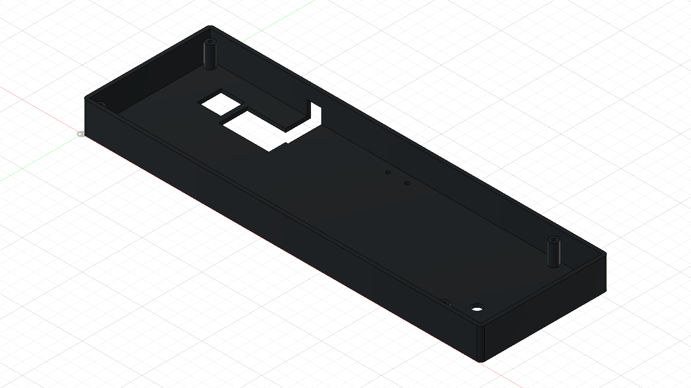
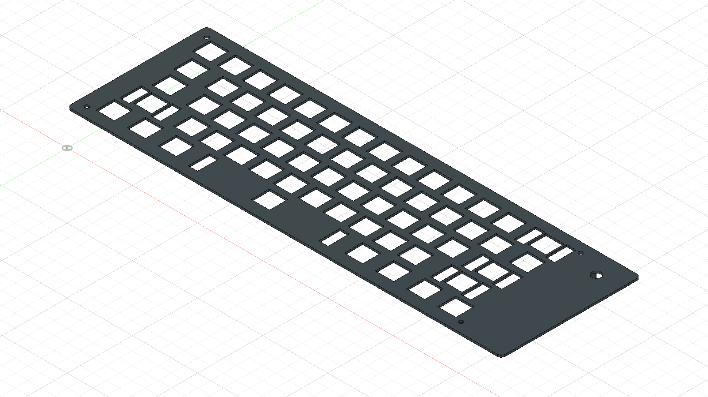

Case floor, walls, mounting bosses and USB access openings.
Separate STEP file
61 switch openings, stabilizer slots and the encoder mounting hole.
Separate STEP fileCustom knob with a 6 mm D-shaft socket, grip flutes, direction arrow, and turn/push operation. Print fit and switch travel still need a physical test.
STEP · STL